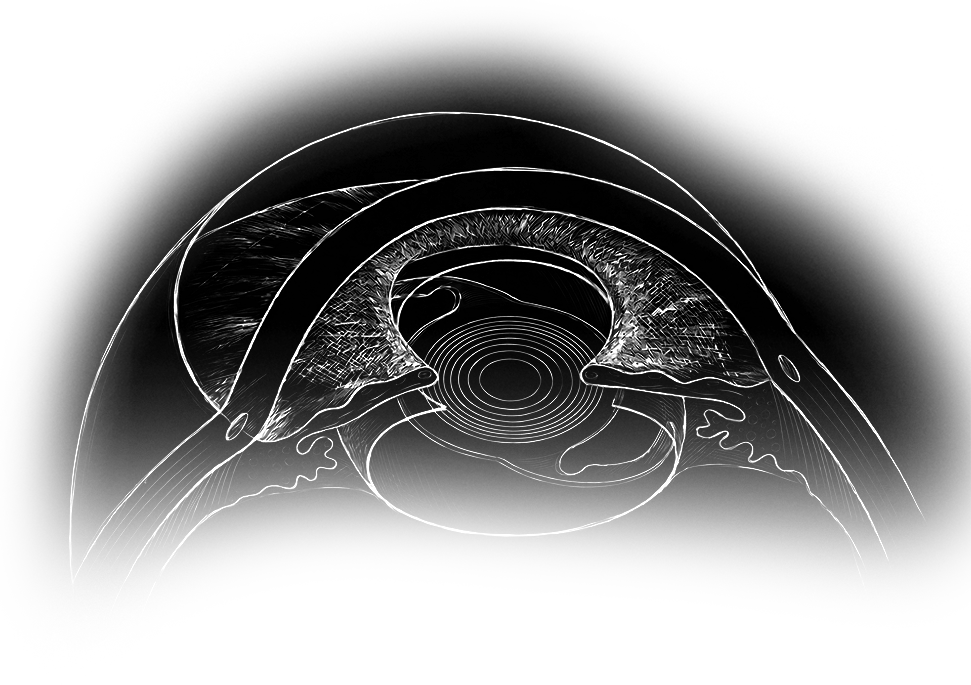
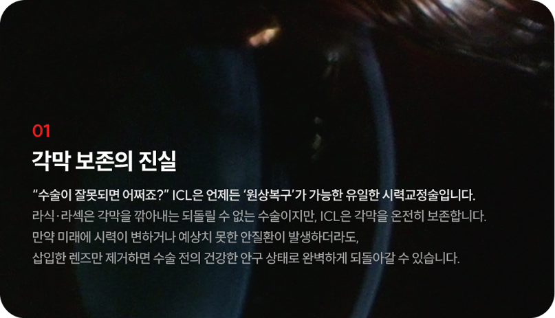
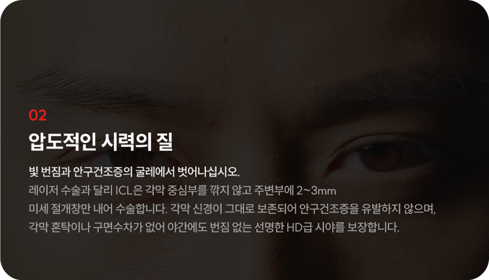

깎아버린 각막은
결코 되돌릴 수 없습니다.
매년 수십만 명이 레이저 시력교정술을 받지만,
그들 중 누구도 10년, 20년 뒤의 부작용 가능성에서
자유롭지 못합니다.
원인 모를 안구건조증으로 매일 인공눈물을 달고 살거나,
시간이 지나 다시 시력이 떨어지는 ‘근시 퇴행’이 왔을 때,
이미 깎아버린 각막은 절대 다시 재생되지 않습니다.
재수술을 하고 싶어도 잔여 각막이 부족해 안경을 다시 써야 하는
좌절감을 마주하게 될지도 모릅니다.
내 소중한 눈에 칼을 대고 레이저로 태워버리는 수술,
정말 대안이 없을까요?
있습니다.
각막을 단 1%도 손상시키지 않는
단 하나의 프리미엄
바로
안내렌즈삽입술(ICL)입니다.

안내렌즈삽입술(ICL),
무엇이 특별할까요?
-

-

안과 의사가
의사에게
또

가족에게
안과 의사들이
가장 선호하는 시력교정술
안내렌즈삽입술(ICL)
ICL 제조사인 STAAR Surgical의 공식 집계에 따르면,
"전 세계에서 ICL 수술을 집도하는 안과 의사 중 수백 명 이상이 본인 눈에
직접 ICL 수술을 받았거나, 자신의 직계 가족에게 이 수술을 직접 집도했다"는
공식 인증 데이터(Surgeon-Patient Registry)가 있습니다.
또한 해당 서베이에서 ICL 전문의의 90% 이상이 "가족이나 지인에게
시력교정술로 ICL을 적극 추천하겠다"고 응답한 결과도 확인된 바 있습니다.